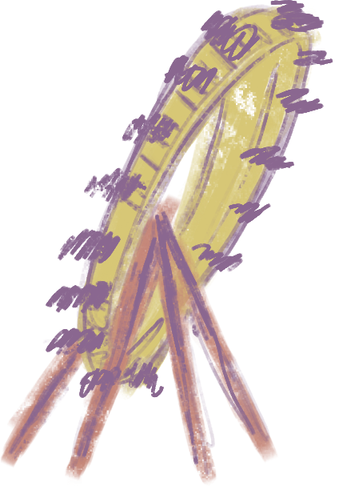
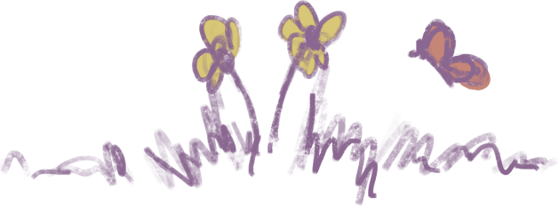
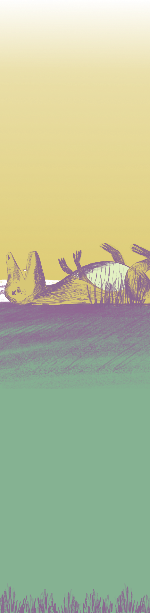
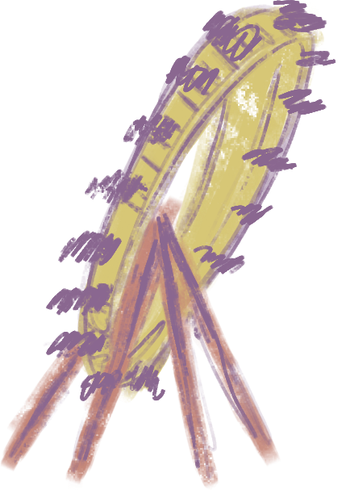
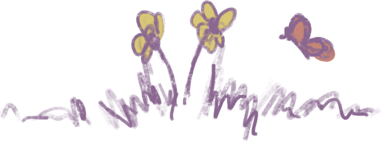
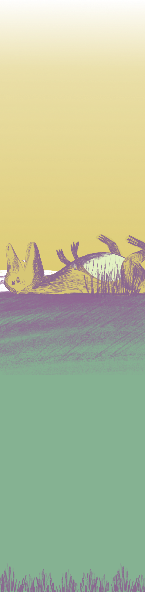

M.
19 de
Agosto
de
2000
 





Tenho boas memórias do tempo que passámos no parque, em Berlim.
Lembro-me
de dar beijos no comboio fantasma, de ser apanhados a fumar,
pela minha
mãe, na cabina da roda-gigante, de espreitar os visitantes em
ângulos
que só eu conhecia...
Mas depois começaram as
avarias constantes. Primeiro foi o Ciclone.
Um escândalo,
jornais, processos, indemnizações... Depois, foram as outras
atrações.
Abriram parques mais modernos, mais voltados para o futuro. E os
jovens de Leste,
depois de atravessar o Muro, precisavam do
futuro. Desesperadamente.
O nosso parque de diversões em
Berlim fechou. Já não tínhamos lugar.
Nós eramos o passado.